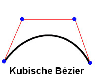
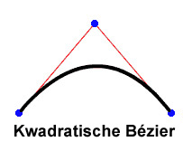
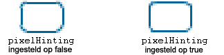

| Pakket | flash.display |
| Klasse | public final class Graphics |
| Overerving | Graphics |
| Taalversie: | ActionScript 3.0 |
| Runtimeversies: | AIR 1.0, Flash Player 9, Flash Lite 4 |
graphics die een object Graphics is. De volgende klassen maken deel uit van deze hulpfuncties en zijn bedoeld voor het gebruiksgemak: drawRect(), drawRoundRect(), drawCircle() en drawEllipse().
U kunt een object Graphics niet direct met ActionScript-code maken. Wanneer u new Graphics() aanroept, wordt een uitzondering gegenereerd.
De klasse Graphics is definitief en kan geen subklassen bevatten.
 Overerfde openbare eigenschappen verbergen
Overerfde openbare eigenschappen verbergen Overerfde openbare eigenschappen weergeven
Overerfde openbare eigenschappen weergeven| Methode | Gedefinieerd door | ||
|---|---|---|---|
beginBitmapFill(bitmap:BitmapData, matrix:Matrix = null, repeat:Boolean = true, smooth:Boolean = false):void
Vult een tekengebied met een bitmapafbeelding. | Graphics | ||
Geeft een vulling met één kleur op die wordt gebruikt voor opvolgende aanroepen van andere methoden Graphics (zoals lineTo() of drawCircle()) bij het tekenen. | Graphics | ||
beginGradientFill(type:String, colors:Array, alphas:Array, ratios:Array, matrix:Matrix = null, spreadMethod:String = "pad", interpolationMethod:String = "rgb", focalPointRatio:Number = 0):void
Geeft een verloopvulling op die moet worden gebruikt voor volgende aanroepen van andere Graphics-methoden (zoals lineTo() of drawCircle()) voor het object. | Graphics | ||
Geeft een vulling met arcering op die moet worden gebruikt voor volgende aanroepen van andere Graphics-methoden (zoals lineTo() of drawCircle()) voor het object. | Graphics | ||
Wist de afbeeldingen die waren getekend voor dit object Graphics en stelt de instellingen voor vulling en lijnstijl opnieuw in. | Graphics | ||
Kopieert alle tekenopdrachten van het bron-Graphics-object naar het aanroepende Graphics-object. | Graphics | ||
cubicCurveTo(controlX1:Number, controlY1:Number, controlX2:Number, controlY2:Number, anchorX:Number, anchorY:Number):void
Tekent een kubische Bézier-curve van de huidige tekenpositie naar het opgegeven ankerpunt. | Graphics | ||
Tekent een kwadratische Bézier-curve met de huidige lijnstijl van de huidige tekenpositie naar (anchorX, anchorY), waarbij het besturingspunt wordt gebruikt dat is opgegeven met (controlX, controlY). | Graphics | ||
Tekent een cirkel. | Graphics | ||
Tekent een ellips. | Graphics | ||
Verzendt een reeks IGraphicsData-instanties voor tekenen. | Graphics | ||
Verzendt een reeks opdrachten voor tekenen. | Graphics | ||
Tekent een rechthoek. | Graphics | ||
drawRoundRect(x:Number, y:Number, width:Number, height:Number, ellipseWidth:Number, ellipseHeight:Number = NaN):void
Tekent een afgeronde rechthoek. | Graphics | ||
drawTriangles(vertices:Vector.<Number>, indices:Vector.<int> = null, uvtData:Vector.<Number> = null, culling:String = "none"):void
Geeft een set driehoeken weer, meestal om bitmaps te vervormen en ze een driedimensionaal voorkomen te geven. | Graphics | ||
Past een vulling toe op de lijnen en curven die zijn toegevoegd sinds de laatste aanroep van de methode beginFill(), beginGradientFill() of beginBitmapFill() | Graphics | ||
 |
Geeft aan of voor een object een opgegeven eigenschap is gedefinieerd. | Object | |
|
Geeft aan of een instantie van de klasse Object zich in de prototypeketen van het object bevindt dat als parameter is opgegeven. | Object | |
lineBitmapStyle(bitmap:BitmapData, matrix:Matrix = null, repeat:Boolean = true, smooth:Boolean = false):void
Geeft een bitmap op die bij het tekenen van lijnen moet worden gebruikt voor de lijnstreek. | Graphics | ||
lineGradientStyle(type:String, colors:Array, alphas:Array, ratios:Array, matrix:Matrix = null, spreadMethod:String = "pad", interpolationMethod:String = "rgb", focalPointRatio:Number = 0):void
Geeft een verloop op dat bij het teken van lijnen moet worden gebruikt voor de tekenhaal. | Graphics | ||
Geeft een arcering op die bij het tekenen van lijnen moet worden gebruikt voor de lijnstreek. | Graphics | ||
lineStyle(thickness:Number = NaN, color:uint = 0, alpha:Number = 1.0, pixelHinting:Boolean = false, scaleMode:String = "normal", caps:String = null, joints:String = null, miterLimit:Number = 3):void
Geeft een lijnstijl op die wordt gebruikt voor volgende aanroepen van Graphics-methoden zoals de methode lineTo() of de methode drawCircle(). | Graphics | ||
Tekent een lijn met de huidige lijnstijl van de huidige tekenpositie naar (x, y). Vervolgens wordt de huidige tekenpositie op (x, y) ingesteld. | Graphics | ||
Verplaatst de huidige tekenpositie naar (x, y). | Graphics | ||
|
Geeft aan of de opgegeven eigenschap bestaat en kan worden opgesomd. | Object | |
Voert query's uit op een Sprite- of Shape-object (en optioneel op de onderliggende elementen ervan) voor de inhoud van de vectorafbeeldingen van het object. | Graphics | ||
|
Stelt de beschikbaarheid van een dynamische eigenschap voor lusbewerkingen in. | Object | |
|
Geeft de tekenreeksweergave van dit object weer, geformatteerd volgens de locatiespecifieke conventies. | Object | |
|
Retourneert een tekenreeksrepresentatie van het opgegeven object. | Object | |
|
Retourneert de primitieve waarde van het opgegeven object. | Object | |
beginBitmapFill | () | methode |
public function beginBitmapFill(bitmap:BitmapData, matrix:Matrix = null, repeat:Boolean = true, smooth:Boolean = false):void| Taalversie: | ActionScript 3.0 |
| Runtimeversies: | AIR 1.0, Flash Player 9, Flash Lite 4 |
Vult een tekengebied met een bitmapafbeelding. De bitmap kan worden herhaald of naast elkaar worden geplaatst om het gebied te vullen. De vulling blijft van kracht totdat u de methode beginFill(), beginBitmapFill(), beginGradientFill() of beginShaderFill() aanroept. De vulling wordt gewist door een aanroep van de methode clear().
De toepassing rendert de vulling wanneer drie of meer punten zijn getekend of wanneer de methode endFill() wordt aangeroepen.
Parameters
bitmap:BitmapData — Een transparante of dekkende bitmapafbeelding die de bits bevat die moeten worden weergegeven.
| |
matrix:Matrix (default = null)
matrix = new flash.geom.Matrix();
matrix.rotate(Math.PI / 4);
| |
repeat:Boolean (default = true)true wordt de bitmapafbeelding naast elkaar herhaald. Wanneer de waarde false is, wordt de bitmapafbeelding niet herhaald en worden de randen van de bitmap gebruikt voor elk vulgebied dat zich buiten de bitmap uitstrekt.
Neem bijvoorbeeld de volgende bitmap (een dambordpatroon van 20 x 20 pixels):
Wanneer
Wanneer
| |
smooth:Boolean (default = false)false is, worden geschaalde (vergrote) bitmapafbeeldingen gerenderd met een algoritme op basis van de dichtstbijzijnde pixels en zien ze er korrelig uit. Wanneer de waarde true is, worden geschaalde (vergrote) bitmapafbeeldingen met een bilineair algoritme gerenderd. Rendering op basis van de dichtstbijzijnde pixels is sneller.
|


Verwante API-elementen
Voorbeeld ( Hoe dit voorbeeld te gebruiken )
image1.jpg) gebruikt die wordt geroteerd en herhaald om een rechthoek te vullen.
- Het afbeeldingsbestand (
image1.jpg) is geladen met behulp van de objectenLoaderenURLRequest. Hier bevindt het bestand zich in dezelfde map als het SWF-bestand. Het SWF-bestand moet worden gecompileerd met Lokale afspeelbeveiliging ingesteld op Alleen lokale bestanden benaderen. - Wanneer de afbeelding is geladen (
Eventis voltooid), wordt de methodedrawImage()aangeroepen. De methodeioErrorHandler()schrijft een trace-commentaar als de afbeelding niet correct is geladen. - In de methode
drawImage()wordt een objectBitmapDatageïnstantieerd en worden de breedte en hoogte ervan ingesteld op de afbeelding (image1.jpg). De bronafbeelding wordt vervolgens in het object BitmapData getekend. Daarna wordt een rechthoek getekend in het Sprite-objectmySpriteen wordt het object BitmapData gebruikt om het te vullen. Met behulp van een objectMatrixroteert de methodebeginBitmapFill()de afbeelding 45 graden en vult vervolgens de rechthoek met de afbeelding.
package {
import flash.display.Sprite;
import flash.display.BitmapData;
import flash.display.Loader;
import flash.net.URLRequest;
import flash.events.Event;
import flash.events.IOErrorEvent;
import flash.geom.Matrix;
public class Graphics_beginBitmapFillExample extends Sprite {
private var url:String = "image1.jpg";
private var loader:Loader = new Loader();
public function Graphics_beginBitmapFillExample() {
var request:URLRequest = new URLRequest(url);
loader.load(request);
loader.contentLoaderInfo.addEventListener(Event.COMPLETE, drawImage);
loader.contentLoaderInfo.addEventListener(IOErrorEvent.IO_ERROR, ioErrorHandler);
}
private function drawImage(event:Event):void {
var mySprite:Sprite = new Sprite();
var myBitmap:BitmapData = new BitmapData(loader.width, loader.height, false);
myBitmap.draw(loader, new Matrix());
var matrix:Matrix = new Matrix();
matrix.rotate(Math.PI/4);
mySprite.graphics.beginBitmapFill(myBitmap, matrix, true);
mySprite.graphics.drawRect(100, 50, 200, 90);
mySprite.graphics.endFill();
addChild(mySprite);
}
private function ioErrorHandler(event:IOErrorEvent):void {
trace("Unable to load image: " + url);
}
}
}
beginFill | () | methode |
public function beginFill(color:uint, alpha:Number = 1.0):void| Taalversie: | ActionScript 3.0 |
| Runtimeversies: | AIR 1.0, Flash Player 9, Flash Lite 4 |
Geeft een vulling met één kleur op die wordt gebruikt voor opvolgende aanroepen van andere methoden Graphics (zoals lineTo() of drawCircle()) bij het tekenen. De vulling blijft van kracht totdat u de methode beginFill(), beginBitmapFill(), beginGradientFill() of beginShaderFill() aanroept. De vulling wordt gewist door een aanroep van de methode clear().
De toepassing rendert de vulling wanneer drie of meer punten zijn getekend of wanneer de methode endFill() wordt aangeroepen.
Parameters
color:uint — De kleur van de vulling (0xRRGGBB).
| |
alpha:Number (default = 1.0) |
Verwante API-elementen
Voorbeeld
Hoe dit voorbeeld te gebruiken
Zie het voorbeeld aan het einde van deze klasse voor een voorbeeld van het gebruik van deze methode.
beginGradientFill | () | methode |
public function beginGradientFill(type:String, colors:Array, alphas:Array, ratios:Array, matrix:Matrix = null, spreadMethod:String = "pad", interpolationMethod:String = "rgb", focalPointRatio:Number = 0):void| Taalversie: | ActionScript 3.0 |
| Runtimeversies: | AIR 1.0, Flash Player 9, Flash Lite 4 |
Geeft een verloopvulling op die moet worden gebruikt voor volgende aanroepen van andere Graphics-methoden (zoals lineTo() of drawCircle()) voor het object. De vulling blijft van kracht totdat u de methode beginFill(), beginBitmapFill(), beginGradientFill() of beginShaderFill() aanroept. De vulling wordt gewist door een aanroep van de methode clear().
De toepassing rendert de vulling wanneer drie of meer punten zijn getekend of wanneer de methode endFill() wordt aangeroepen.
Parameters
type:String — Een waarde uit de klasse GradientType die aangeeft welk verlooptype u moet gebruiken: GradientType.LINEAR of GradientType.RADIAL.
| |||||||||
colors:Array — Een array van hexadecimale RGB-kleurwaarden die in het verloop worden gebruikt (rood is bijvoorbeeld 0xFF0000, blauw is 0x0000FF, enzovoort). U kunt maximaal 15 kleuren opgeven. Geef voor elke kleur een bijbehorende waarde in de parameters alphas en ratios op.
| |||||||||
alphas:Array — Een array van alpha-waarden voor de overeenkomende kleuren in de kleurenarray. Geldige waarden zijn 0 tot en met 1. Wanneer de waarde lager is dan 0, is de standaardwaarde 0. Wanneer de waarde hoger is dan 1, is de standaardwaarde 1.
| |||||||||
ratios:Array — Een reeks van kleurdistributieratio's; geldige waarden zijn 0-255. Met deze waarde wordt het percentage van de breedte gedefinieerd waar de kleursampling 100% is. De waarde 0 vertegenwoordigt de linkerpositie in het verloopvak, terwijl de waarde 255 de rechterpositie in het verloopvak vertegenwoordigt.
Opmerking: deze waarde vertegenwoordigt de positie in het verloopvak, niet de coördinaatruimte van het uiteindelijke verloop, dat breder of smaller kan zijn dan het verloopvak. Geef voor elke waarde in de parameter Het volgende voorbeeld toont bijvoorbeeld voor een lineair verloop met twee kleuren, blauw en groen, de plaatsing van de kleuren in het verloop op basis van de verschillende waarden in de array
De waarden in de array moeten opeenvolgend oplopen; bijvoorbeeld | |||||||||
matrix:Matrix (default = null)createGradientBox(), waarmee u de matrix eenvoudig kunt instellen voor gebruik met de methode beginGradientFill().
| |||||||||
spreadMethod:String (default = "pad")SpreadMethod.PAD, SpreadMethod.REFLECT ofSpreadMethod.REPEAT.
Neem bijvoorbeeld een eenvoudig lineair verloop tussen twee kleuren:
import flash.geom.*
import flash.display.*
var fillType:String = GradientType.LINEAR;
var colors:Array = [0xFF0000, 0x0000FF];
var alphas:Array = [1, 1];
var ratios:Array = [0x00, 0xFF];
var matr:Matrix = new Matrix();
matr.createGradientBox(20, 20, 0, 0, 0);
var spreadMethod:String = SpreadMethod.PAD;
this.graphics.beginGradientFill(fillType, colors, alphas, ratios, matr, spreadMethod);
this.graphics.drawRect(0,0,100,100);
In dit voorbeeld wordt
Wanneer u
Wanneer u
| |||||||||
interpolationMethod:String (default = "rgb")InterpolationMethod.LINEAR_RGB of InterpolationMethod.RGB
Neem bijvoorbeeld een eenvoudig, lineair verloop tussen twee kleuren (waarbij de parameter
| |||||||||
focalPointRatio:Number (default = 0)focalPointRatio getoond die op 0,75 is ingesteld:
|


Gegenereerde uitzondering
ArgumentError — Indien de parameter type niet geldig is.
|
Verwante API-elementen
beginShaderFill | () | methode |
public function beginShaderFill(shader:Shader, matrix:Matrix = null):void| Taalversie: | ActionScript 3.0 |
| Runtimeversies: | Flash Player 10, AIR 1.5 |
Geeft een vulling met arcering op die moet worden gebruikt voor volgende aanroepen van andere Graphics-methoden (zoals lineTo() of drawCircle()) voor het object. De vulling blijft van kracht totdat u de methode beginFill(), beginBitmapFill(), beginGradientFill() of beginShaderFill() aanroept. De vulling wordt gewist door een aanroep van de methode clear().
De toepassing rendert de vulling wanneer drie of meer punten zijn getekend of wanneer de methode endFill() wordt aangeroepen.
Arceringsvullingen worden niet ondersteund bij GPU-rendering. Opgevulde gebieden krijgen de kleur cyaan.
Parameters
shader:Shader — De arcering die voor de vulling moet worden gebruikt. Deze Shader-instantie is niet vereist voor het opgeven van een afbeeldingsinvoer. Als er echter een arceringsinvoer wordt opgegeven in de arcering, moet de invoer handmatig worden geleverd. Als u de invoer wilt opgegeven, stelt u de eigenschap input van de overeenkomstige ShaderInput-eigenschap van de eigenschap Shader.data in.
Als u een Shader-instantie doorgeeft als een argument, wordt de arcering intern gekopieerd. De tekenvulbewerking gebruikt die interne kopie en geen verwijzing naar de oorspronkelijke arcering. Wijzigingen die worden aangebracht in de arcering, zoals een gewijzigde parameterwaarde, invoer of bytecode, worden niet toegepast op de gekopieerde arcering die wordt gebruikt voor de vulling. | |
matrix:Matrix (default = null)
matrix = new flash.geom.Matrix();
matrix.rotate(Math.PI / 4);
De coördinaten die worden ontvangen in de arcering, zijn gebaseerd op de matrix die is opgegeven voor de parameter |
Gegenereerde uitzondering
ArgumentError — Als het arceringsuitvoertype niet compatibel ismet deze bewering (de arcering moet een pixel3- of pixel4-uitvoer opgeven).
| |
ArgumentError — Als de arcering een afbeeldingsinvoer opgeeft die niet beschikbaar is.
| |
ArgumentError — Als deze een ByteArray of Vector is.<Number>-instantie wordt gebruikt als een invoer, en de eigenschappen width en height zijn niet opgegeven voor de ShaderInput, of de opgegeven waarden komen niet in met de hoeveelheid gegevens in de invoergegevens. Zie de eigenschap ShaderInput.input voor meer informatie.
|
Verwante API-elementen
clear | () | methode |
public function clear():void| Taalversie: | ActionScript 3.0 |
| Runtimeversies: | AIR 1.0, Flash Player 9, Flash Lite 4 |
Wist de afbeeldingen die waren getekend voor dit object Graphics en stelt de instellingen voor vulling en lijnstijl opnieuw in.
copyFrom | () | methode |
public function copyFrom(sourceGraphics:Graphics):void| Taalversie: | ActionScript 3.0 |
| Runtimeversies: | Flash Player 10, AIR 1.5, Flash Lite 4 |
Kopieert alle tekenopdrachten van het bron-Graphics-object naar het aanroepende Graphics-object.
Parameters
sourceGraphics:Graphics — Het Graphics-object van waaruit de tekenopdrachten moeten worden gekopieerd.
|
cubicCurveTo | () | methode |
public function cubicCurveTo(controlX1:Number, controlY1:Number, controlX2:Number, controlY2:Number, anchorX:Number, anchorY:Number):void| Taalversie: | ActionScript 3.0 |
| Runtimeversies: | Flash Player 11, AIR 3 |
Tekent een kubische Bézier-curve van de huidige tekenpositie naar het opgegeven ankerpunt. Kubieke Bézier-curven bestaan uit twee ankerpunten en twee besturingspunten. De curve interpoleert de twee ankerpunten en buigt af naar de twee besturingspunten.

U gebruikt de volgende vier punten om een kubische Bézier-curve te tekenen met de cubicCurveTo()-methode:
- Het huidige tekenpunt is het eerste ankerpunt.
- De parameters
anchorXenanchorYverwijzen naar het tweede ankerpunt. - De parameters
controlX1encontrolY1verwijzen naar het eerste besturingspunt. - De parameters
controlX2encontrolY2verwijzen naar het tweede besturingspunt.
Als u de methode cubicCurveTo() aanroept voordat u de methode moveTo() aanroept, begint uw curve bij positie (0, 0).
Als de methode cubicCurveTo() succesvol is, stelt de Flash-runtime de huidige tekenpositie in op (anchorX, anchorY). Wanneer de methode cubicCurveTo() mislukt, blijft de huidige tekenpositie ongewijzigd.
Als uw filmclip inhoud bevat die is gemaakt met de tekengereedschappen van Flash, worden de resultaten van het aanroepen van de methode cubicCurveTo() onder de desbetreffende inhoud getekend.
Parameters
controlX1:Number — Geeft de horizontale positie op van het eerste besturingspunt ten opzichte van het registratiepunt van het bovenliggende weergaveobject.
| |
controlY1:Number — Geeft de verticale positie op van het eerste besturingspunt ten opzichte van het registratiepunt van het bovenliggende weergaveobject.
| |
controlX2:Number — Geeft de horizontale positie op van het tweede besturingspunt ten opzichte van het registratiepunt van het bovenliggende weergaveobject.
| |
controlY2:Number — Geeft de verticale positie op van het tweede besturingspunt ten opzichte van het registratiepunt van het bovenliggende weergaveobject.
| |
anchorX:Number — Geeft de horizontale positie van het ankerpunt op ten opzichte van het registratiepunt van het bovenliggende weergaveobject.
| |
anchorY:Number — Geeft de verticale positie van het ankerpunt op ten opzichte van het registratiepunt van het bovenliggende weergaveobject.
|
Voorbeeld ( Hoe dit voorbeeld te gebruiken )
Teken vier curven om een cirkel te maken en vul deze met blauw.
De cirkel is echter niet perfect door de aard van de kubieke Bézier-vergelijking: De beste manier om een cirkel te tekenen, is met de methode drawCircle() van de klasse Graphic.
package {
import flash.display.Sprite;
import flash.display.Shape;
public class Graphics_cubicCurveToExample extends Sprite
{
public function Graphics_cubicCurveToExample():void
{
var rounderObject:Shape = new Shape();
rounderObject.graphics.beginFill(0x0000FF);
rounderObject.graphics.moveTo(250, 0);
rounderObject.graphics.cubicCurveTo(275, 0, 300, 25, 300, 50);
rounderObject.graphics.cubicCurveTo(300, 75, 275, 100, 250, 100);
rounderObject.graphics.cubicCurveTo(225, 100, 200, 75, 200, 50);
rounderObject.graphics.cubicCurveTo(200, 25, 225, 0, 250, 0);
rounderObject.graphics.endFill();
this.addChild(rounderObject);
}
}
}
curveTo | () | methode |
public function curveTo(controlX:Number, controlY:Number, anchorX:Number, anchorY:Number):void| Taalversie: | ActionScript 3.0 |
| Runtimeversies: | AIR 1.0, Flash Player 9, Flash Lite 4 |
Tekent een kwadratische Bézier-curve met de huidige lijnstijl van de huidige tekenpositie naar (anchorX, anchorY), waarbij het besturingspunt wordt gebruikt dat is opgegeven met (controlX, controlY). De huidige tekenpositie wordt vervolgens ingesteld op (anchorX, anchorY). Wanneer de filmclip die u tekent inhoud bevat die is gemaakt met de Flash-tekengereedschappen, worden aanroepen van de methode curveTo() onder deze inhoud getekend. Wanneer u de methode curveTo() aanroept vóór eventuele aanroepen van de methode moveTo(), is de standaardpositie voor de huidige tekening (0, 0). Wanneer een van de parameters ontbreekt, mislukt deze methode en wordt de huidige tekenpositie niet gewijzigd.
De curve die wordt getekend, is een kwadratische Bézier-curve. Kwadratische Bézier-curven bestaan uit twee ankerpunten en één besturingspunt. De curve interpoleert de twee ankerpunten en buigt af naar het besturingspunt.

Parameters
controlX:Number — Een getal dat de horizontale positie van het besturingspunt ten opzichte van het registratiepunt van het bovenliggende weergaveobject opgeeft.
| |
controlY:Number — Een getal dat de verticale positie van het besturingspunt ten opzichte van het registratiepunt van het bovenliggende weergaveobject opgeeft.
| |
anchorX:Number — Een getal dat de horizontale positie van het volgende besturingspunt ten opzichte van het registratiepunt van het bovenliggende weergaveobject opgeeft.
| |
anchorY:Number — Een getal dat de verticale positie van het volgende besturingspunt ten opzichte van het registratiepunt van het bovenliggende weergaveobject opgeeft.
|
Voorbeeld ( Hoe dit voorbeeld te gebruiken )
Teken vier curven om een cirkel te maken en vul deze met groen.
De cirkel is echter niet perfect door de aard van de kwadratische Bézier-vergelijking: De beste manier om een cirkel te tekenen, is met de methode drawCircle() van de klasse Graphic.
package {
import flash.display.Sprite;
import flash.display.Shape;
public class Graphics_curveToExample1 extends Sprite
{
public function Graphics_curveToExample1():void
{
var roundObject:Shape = new Shape();
roundObject.graphics.beginFill(0x00FF00);
roundObject.graphics.moveTo(250, 0);
roundObject.graphics.curveTo(300, 0, 300, 50);
roundObject.graphics.curveTo(300, 100, 250, 100);
roundObject.graphics.curveTo(200, 100, 200, 50);
roundObject.graphics.curveTo(200, 0, 250, 0);
roundObject.graphics.endFill();
this.addChild(roundObject);
}
}
}
curveTo().
Er worden twee curvelijnen van 1 pixel getekend en de ruimte ertussen wordt met wit gevuld. De methode moveTo() wordt gebruikt om de huidige tekenpositie naar de coördinaten (100, 100) te verplaatsen. De eerste curve verplaatst de tekenpositie naar (100, 200), het bestemmingspunt. De tweede curve retourneert de positie terug naar de startpositie (100, 100), het bestemmingspunt. De horizontale besturingspunten bepalen de verschillende curvegrootten.
package {
import flash.display.Sprite;
import flash.display.Shape;
public class Graphics_curveToExample2 extends Sprite
{
public function Graphics_curveToExample2() {
var newMoon:Shape = new Shape();
newMoon.graphics.lineStyle(1, 0);
newMoon.graphics.beginFill(0xFFFFFF);
newMoon.graphics.moveTo(100, 100);
newMoon.graphics.curveTo(30, 150, 100, 200);
newMoon.graphics.curveTo(50, 150, 100, 100);
graphics.endFill();
this.addChild(newMoon);
}
}
}
drawCircle | () | methode |
public function drawCircle(x:Number, y:Number, radius:Number):void| Taalversie: | ActionScript 3.0 |
| Runtimeversies: | AIR 1.0, Flash Player 9, Flash Lite 4 |
Tekent een cirkel. Stel de lijnstijl, vulling of beide in voordat u de methode drawCircle() aanroept door de methode linestyle(), lineGradientStyle(), beginFill(), beginGradientFill() of beginBitmapFill() aan te roepen.
Parameters
x:Number — De x-positie van het middelpunt van de cirkel ten opzichte van het registratiepunt van het bovenliggende weergaveobject (in pixels).
| |
y:Number — De y-positie van het middelpunt van de cirkel ten opzichte van het registratiepunt van het bovenliggende weergaveobject (in pixels).
| |
radius:Number — De straal van de cirkel (in pixels).
|
Verwante API-elementen
Voorbeeld
Hoe dit voorbeeld te gebruiken
Zie het voorbeeld aan het einde van deze klasse voor een voorbeeld van het gebruik van deze methode.
drawEllipse | () | methode |
public function drawEllipse(x:Number, y:Number, width:Number, height:Number):void| Taalversie: | ActionScript 3.0 |
| Runtimeversies: | AIR 1.0, Flash Player 9, Flash Lite 4 |
Tekent een ellips. Stel de lijnstijl, vulling of beide in voordat u de methode drawEllipse() aanroept door de methode linestyle(), lineGradientStyle(), beginFill(), beginGradientFill() of beginBitmapFill() aan te roepen.
Parameters
x:Number — De x-positie van de linkerbovenhoek van het selectiekader van de ellips ten opzichte van het registratiepunt van het bovenliggende weergaveobject (in pixels).
| |
y:Number — De y-positie van de linkerbovenhoek van het selectiekader van de ellips ten opzichte van het registratiepunt van het bovenliggende weergaveobject (in pixels).
| |
width:Number — De breedte van de ellips (in pixels).
| |
height:Number — De hoogte van de ellips (in pixels).
|
Verwante API-elementen
Voorbeeld ( Hoe dit voorbeeld te gebruiken )
drawEgg() gebruikt om drie eieren met verschillende grootte (drie ellipsformaten) te tekenen, op basis van de parameter eggSize.
- De constructor roept de functie
drawEgg()aan en geeft de horizontale en verticale parameters door voor de locatie waar het ei moet worden getekend, plus het type ei (eggSize). (De hoogte en breedte van de eieren (de ellipsen) kunnen worden gebruikt om te bepalen waar ze moeten worden weergegeven.) - De functie
drawEgg()tekent de verschillende ellipsgrootten en vult ze met wit met de methodebeginFill(). Er is nog geen foutafhandeling voor deze functie geschreven.
package {
import flash.display.Sprite;
import flash.display.Shape;
public class Graphics_drawEllipseExample extends Sprite
{
public static const SMALL:uint = 0;
public static const MEDIUM:uint = 1;
public static const LARGE:uint = 2;
public function Graphics_drawEllipseExample()
{
drawEgg(SMALL, 0, 100);
drawEgg(MEDIUM, 100, 60);
drawEgg(LARGE, 250, 35);
}
public function drawEgg(eggSize:uint, x:Number, y:Number):void {
var myEgg:Shape = new Shape();
myEgg.graphics.beginFill(0xFFFFFF);
myEgg.graphics.lineStyle(1);
switch(eggSize) {
case SMALL:
myEgg.graphics.drawEllipse(x, y, 60, 70);
break;
case MEDIUM:
myEgg.graphics.drawEllipse(x, y, 120, 150);
break;
case LARGE:
myEgg.graphics.drawEllipse(x, y, 150, 200);
break;
default:
trace ("Wrong size! There is no egg.");
break;
}
myEgg.graphics.endFill();
this.addChild(myEgg);
}
}
}
drawGraphicsData | () | methode |
public function drawGraphicsData(graphicsData:Vector.<IGraphicsData>):void| Taalversie: | ActionScript 3.0 |
| Runtimeversies: | Flash Player 10, AIR 1.5 |
Verzendt een reeks IGraphicsData-instanties voor tekenen. Deze methode accepteert een vector die objecten bevat, waaronder paden, vullingen en streken, die de IGraphicsData-interface implementeren. Een vector van IGraphicsData-instanties kan verwijzen naar een gedeelte van een vorm of een complexe, volledig gedefinieerde set gegevens voor de rendering van een volledige vorm.
Grafische paden kunnen andere grafische paden bevatten. Als de vector graphicsData een pad bevat, worden dat pad en alle subpaden gerenderd tijdens deze bewerking.
Parameters
graphicsData:Vector.<IGraphicsData> — Een vector die grafische objecten bevat, die elk de IGraphicsData-interface moeten implementeren.
|
Verwante API-elementen
GraphicsBitmapFill-klasse
GraphicsEndFill-klasse
GraphicsGradientFill-klasse
GraphicsPath-klasse
GraphicsShaderFill-klasse
GraphicsSolidFill-klasse
GraphicsStroke-klasse
GraphicsTrianglePath-klasse
readGraphicsData()-methode
Voorbeeld ( Hoe dit voorbeeld te gebruiken )
drawGraphicsData()-opdracht om de vorm te bepalen.
package
{
import flash.display.*;
import flash.geom.*;
public class DrawGraphicsDataExample extends Sprite
{
public function DrawGraphicsDataExample()
{
// establish the fill properties
var myFill:GraphicsGradientFill = new GraphicsGradientFill();
myFill.colors = [0xEEFFEE, 0x0000FF];
myFill.matrix = new Matrix();
myFill.matrix.createGradientBox(100, 100, 0);
// establish the stroke properties
var myStroke:GraphicsStroke = new GraphicsStroke(2);
myStroke.fill = new GraphicsSolidFill(0x000000);
// establish the path properties
var pathCommands = new Vector.<int>(5, true);
pathCommands[0] = GraphicsPathCommand.MOVE_TO;
pathCommands[1] = GraphicsPathCommand.LINE_TO;
pathCommands[2] = GraphicsPathCommand.LINE_TO;
pathCommands[3] = GraphicsPathCommand.LINE_TO;
pathCommands[4] = GraphicsPathCommand.LINE_TO;
var pathCoordinates:Vector.<Number> = new Vector.<Number>(10, true);
pathCoordinates.push(10,10, 10,100, 100,100, 100,10, 10,10);
var myPath:GraphicsPath = new GraphicsPath(pathCommands, pathCoordinates);
// populate the IGraphicsData Vector array
var myDrawing:Vector.<IGraphicsData> = new Vector.<IGraphicsData>(3, true);
myDrawing[0] = myFill;
myDrawing[1] = myStroke;
myDrawing[2] = myPath;
// render the drawing
graphics.drawGraphicsData(myDrawing);
}
}
}
drawPath | () | methode |
public function drawPath(commands:Vector.<int>, data:Vector.<Number>, winding:String = "evenOdd"):void| Taalversie: | ActionScript 3.0 |
| Runtimeversies: | Flash Player 10, AIR 1.5 |
Verzendt een reeks opdrachten voor tekenen. De drawPath()-methode accepteert een vector van afzonderlijke moveTo()-, lineTo()- en curveTo()-tekenopdrachten en combineert deze in één aanroep. De parameters van de methode drawPath() combineren tekenopdrachten met waardeparen van x- en y-coördinaten en een tekenrichting. De tekenopdrachten zijn gehele getallen die worden vertegenwoordigd als constanten die worden gedefinieerd in de GraphicsPathCommand-klasse. De waardeparen van x- en y-coördinaten zijn getallen in een array waarbij elk paar een coördinatenlocatie definieert. De tekenrichting is de waarde van de klasse GraphicsPathWinding.
Doorgaans worden tekeningen sneller weergegeven met drawPath() dan met een reeks afzonderlijke lineTo()- en curveTo()-methodeaanroepen.
De methode drawPath() gebruikt een zwevende berekening zodat de schaal van vormen nauwkeuriger is, en levert betere resultaten. Dat betekent echter ook dat curven die worden verzonden met de methode drawPath() kleine subpixel-uitlijningsfouten kunnen hebben wanneer ze worden gebruikt in combinatie met de methoden lineTo() en curveTo().
De methode drawPath() gebruikt eveneens enigszins afwijkende regels voor het vullen en tekenen van lijnen. Het zijn de volgende:
- Wanneer een vulling wordt toegepast op het renderen van een pad:
- Een subpad van minder dan 3 punten wordt niet gerenderd. (Let wel: de streek wordt wel gerenderd, maar consistent met de onderstaande regels voor streken.)
- Een subpad dat niet is gesloten (het eindpunt is niet gelijk aan het beginpunt), wordt impliciet gesloten.
- Wanneer een streek wordt toegepast op het renderen van een pad:
- De subpaden kunnen uit een willekeurig aantal punten zijn samengesteld.
- Het subpad wordt nooit impliciet gesloten.
Parameters
commands:Vector.<int> — Een vector van gehele getallen die tekenopdrachten vertegenwoordigen. De set met toegestane waarden wordt gedefinieerd door de constanten in de GraphicsPathCommand-klasse.
| |
data:Vector.<Number> — Een vector van Number-instanties waarbij elk paar getallen als een coördinatenlocatie wordt beschouwd (een x,y-paar). De waardeparen van x- en y-coördinaten zijn geen Point-objecten; de gegevensvector is een reeks getallen waarvan elke groep van twee getallen een coördinatenlocatie vertegenwoordigt.
| |
winding:String (default = "evenOdd") |
Verwante API-elementen
Voorbeeld ( Hoe dit voorbeeld te gebruiken )
drawPath() om een blauwe ster weer te geven. De eerste vector, star_commands, bevat een reeks constanten die tekenopdrachten vertegenwoordigen van de GraphicsPathCommand-klasse. De tweede vector, star_coord, bevat 5 sets x- en y-coördinatenparen. De methode drawPath() zoekt de opdrachten bij de posities om een ster te tekenen.
package
{
import flash.display.*;
public class DrawPathExample extends Sprite
{
public function DrawPathExample()
{
var star_commands:Vector.<int> = new Vector.<int>(5, true);
star_commands[0] = GraphicsPathCommand.MOVE_TO;
star_commands[1] = GraphicsPathCommand.LINE_TO;
star_commands[2] = GraphicsPathCommand.LINE_TO;
star_commands[3] = GraphicsPathCommand.LINE_TO;
star_commands[4] = GraphicsPathCommand.LINE_TO;
var star_coord:Vector.<Number> = new Vector.<Number>(10, true);
star_coord[0] = 66; //x
star_coord[1] = 10; //y
star_coord[2] = 23;
star_coord[3] = 127;
star_coord[4] = 122;
star_coord[5] = 50;
star_coord[6] = 10;
star_coord[7] = 49;
star_coord[8] = 109;
star_coord[9] = 127;
graphics.beginFill(0x003366);
graphics.drawPath(star_commands, star_coord);
}
}
}
drawPath() gebruikt standaard het wenteltype even/oneven. Het midden van de ster wordt daarom niet gevuld. Geef het type niet-nul op voor de derde parameter om het midden van de ster te vullen:
graphics.drawPath(star_commands, star_coord, GraphicsPathWinding.NON_ZERO);
drawRect | () | methode |
public function drawRect(x:Number, y:Number, width:Number, height:Number):void| Taalversie: | ActionScript 3.0 |
| Runtimeversies: | AIR 1.0, Flash Player 9, Flash Lite 4 |
Tekent een rechthoek. Stel de lijnstijl, vulling of beide in voordat u de methode drawRect() aanroept door de methode linestyle(), lineGradientStyle(), beginFill(), beginGradientFill() of beginBitmapFill() aan te roepen.
Parameters
x:Number — Een getal dat de horizontale positie aangeeft ten opzichte van het registratiepunt van het bovenliggende weergaveobject (in pixels).
| |
y:Number — Een getal dat de verticale positie aangeeft ten opzichte van het registratiepunt van het bovenliggende weergaveobject (in pixels).
| |
width:Number — De breedte van de rechthoek (in pixels).
| |
height:Number — De hoogte van de rechthoek (in pixels).
|
Gegenereerde uitzondering
ArgumentError — Wanneer de parameter width of height geen getal is (Number.NaN).
|
Verwante API-elementen
Voorbeeld ( Hoe dit voorbeeld te gebruiken )
var movieClip:MovieClip = new MovieClip(); movieClip.graphics.beginFill(0xFF0000); movieClip.graphics.drawRect(0, 0, 100, 80); movieClip.graphics.endFill(); movieClip.x = 10; movieClip.y = 10; addChild(movieClip);
drawRoundRect | () | methode |
public function drawRoundRect(x:Number, y:Number, width:Number, height:Number, ellipseWidth:Number, ellipseHeight:Number = NaN):void| Taalversie: | ActionScript 3.0 |
| Runtimeversies: | AIR 1.0, Flash Player 9, Flash Lite 4 |
Tekent een afgeronde rechthoek. Stel de lijnstijl, vulling of beide in voordat u de methode drawRoundRect() aanroept door de methode linestyle(), lineGradientStyle(), beginFill(), beginGradientFill() of beginBitmapFill() aan te roepen.
Parameters
x:Number — Een getal dat de horizontale positie aangeeft ten opzichte van het registratiepunt van het bovenliggende weergaveobject (in pixels).
| |
y:Number — Een getal dat de verticale positie aangeeft ten opzichte van het registratiepunt van het bovenliggende weergaveobject (in pixels).
| |
width:Number — De breedte van de afgeronde rechthoek (in pixels).
| |
height:Number — De hoogte van de afgeronde rechthoek (in pixels).
| |
ellipseWidth:Number — De breedte van de ellips die wordt gebruikt om de afgeronde hoeken te tekenen (in pixels).
| |
ellipseHeight:Number (default = NaN)ellipseWidth.
|
Gegenereerde uitzondering
ArgumentError — Wanneer de parameter width, height, ellipseWidth of ellipseHeight geen getal is (Number.NaN).
|
Verwante API-elementen
Voorbeeld
Hoe dit voorbeeld te gebruiken
Zie het voorbeeld aan het einde van deze klasse voor een voorbeeld van het gebruik van deze methode.
drawTriangles | () | methode |
public function drawTriangles(vertices:Vector.<Number>, indices:Vector.<int> = null, uvtData:Vector.<Number> = null, culling:String = "none"):void| Taalversie: | ActionScript 3.0 |
| Runtimeversies: | Flash Player 10, AIR 1.5 |
Geeft een set driehoeken weer, meestal om bitmaps te vervormen en ze een driedimensionaal voorkomen te geven. De methode drawTriangles() wijst de huidige vulling of een bitmapvulling toe aan de oppervlakken van de driehoek met behulp van een set (u,v)-coördinaten.
Elk type vulling kan worden gebruikt, maar als de vulling een transformatiematrix heeft, wordt die transformatiematrix genegeerd.
Een parameter uvtData verbetert de textuurtoewijzing wanneer een bitmapvulling wordt gebruikt.
Parameters
vertices:Vector.<Number> — Een vector van getallen waarbij elk paar getallen als een coördinatenlocatie wordt beschouwd (een x,y-paar). De parameter vertices is vereist.
| |
indices:Vector.<int> (default = null)indexes null is, definieert elke set van drie hoekpunten (zes x,y-paren in de vector vertices) een driehoek. Anders verwijst elke index naar een hoekpunt, dat een paar getallen is in de vector vertices. Zo verwijst indexes[1] naar (vertices[2], vertices[3]). De parameter indexes is optioneel, maar indexen verminderen doorgaans de hoeveelheid gegevens die wordt verzonden en de hoeveelheid gegevens die wordt berekend.
| |
uvtData:Vector.<Number> (default = null)Als de lengte van deze vector tweemaal de lengte is van de vector Als de lengte van deze vector driemaal de lengte van de vector Als de parameter | |
culling:String (default = "none") |
Verwante API-elementen
endFill | () | methode |
public function endFill():void| Taalversie: | ActionScript 3.0 |
| Runtimeversies: | AIR 1.0, Flash Player 9, Flash Lite 4 |
Past een vulling toe op de lijnen en curven die zijn toegevoegd sinds de laatste aanroep van de methode beginFill(), beginGradientFill() of beginBitmapFill(). Flash gebruikt de vulling die is opgegeven in de vorige aanroep van beginFill(), beginGradientFill() of beginBitmapFill(). Wanneer de huidige tekenpositie niet overeenkomt met de vorige positie die is opgegeven in de methode moveTo() en een vulling is gedefinieerd, wordt het pad gesloten met een lijn en vervolgens gevuld.
Verwante API-elementen
lineBitmapStyle | () | methode |
public function lineBitmapStyle(bitmap:BitmapData, matrix:Matrix = null, repeat:Boolean = true, smooth:Boolean = false):void| Taalversie: | ActionScript 3.0 |
| Runtimeversies: | Flash Player 10, AIR 1.5 |
Geeft een bitmap op die bij het tekenen van lijnen moet worden gebruikt voor de lijnstreek.
De lijnstijl van de bitmap wordt gebruikt voor volgende aanroepen van Graphics-methoden zoals de methode lineTo() of de methode drawCircle(). De lijnstijl blijft van kracht totdat u de methode lineStyle() of lineGradientStyle() of de methode lineBitmapStyle() nogmaals aanroept met andere parameters.
U kunt de methode lineBitmapStyle() aanroepen halverwege het tekenen van een pad om verschillende stijlen voor verschillende lijnsegmenten binnen een pad aan te geven.
Roep de methode lineStyle() aan voordat u de methode lineGradientStyle() aanroept om een streek in te schakelen; anders wordt de waarde van de lijnstijl undefined.
Met aanroepen van de methode clear() wordt de lijnstijl weer op undefined ingesteld.
Parameters
bitmap:BitmapData — De bitmap die voor de lijnstreek moet worden gebruikt.
| |
matrix:Matrix (default = null) | |
repeat:Boolean (default = true) | |
smooth:Boolean (default = false) |
Verwante API-elementen
lineGradientStyle | () | methode |
public function lineGradientStyle(type:String, colors:Array, alphas:Array, ratios:Array, matrix:Matrix = null, spreadMethod:String = "pad", interpolationMethod:String = "rgb", focalPointRatio:Number = 0):void| Taalversie: | ActionScript 3.0 |
| Runtimeversies: | AIR 1.0, Flash Player 9 |
Geeft een verloop op dat bij het teken van lijnen moet worden gebruikt voor de tekenhaal.
De verlooplijnstijl wordt gebruikt voor volgende aanroepen van Graphics-methoden zoals de methode lineTo() of de methode drawCircle(). De lijnstijl blijft van kracht totdat u de methode lineStyle() of lineBitmapStyle() of de methode lineGradientStyle() nogmaals aanroept met andere parameters.
U kunt de methode lineGradientStyle() aanroepen halverwege het tekenen van een pad om verschillende stijlen voor verschillende lijnsegmenten binnen een pad aan te geven.
Roep de methode lineStyle() aan voordat u de methode lineGradientStyle() aanroept om een streek in te schakelen; anders wordt de waarde van de lijnstijl undefined.
Met aanroepen van de methode clear() wordt de lijnstijl weer op undefined ingesteld.
Parameters
type:String — Een waarde uit de klasse GradientType die aangeeft welk verlooptype moet worden gebruikt: GradientType.LINEAR of GradientType.RADIAL.
| |||||||||
colors:Array — Een array van hexadecimale RGB-kleurwaarden die moeten worden gebruikt in het verloop (rood is bijvoorbeeld 0xFF0000, blauw 0x0000FF enzovoort).
| |||||||||
alphas:Array — Een array van alpha-waarden voor de overeenkomende kleuren in de kleurenarray. Geldige waarden zijn 0 tot en met 1. Wanneer de waarde lager is dan 0, is de standaardwaarde 0. Wanneer de waarde hoger is dan 1, is de standaardwaarde 1.
| |||||||||
ratios:Array — Een array van kleurdistributieverhoudingen. Geldige waarden zijn 0 tot en met 255. Met deze waarde wordt het percentage van de breedte gedefinieerd waar de kleursampling 100% is. De waarde 0 vertegenwoordigt de linkerpositie in het verloopvak, terwijl de waarde 255 de rechterpositie in het verloopvak vertegenwoordigt. Deze waarde vertegenwoordigt de positie in het verloopvak, niet de coördinaatruimte van het uiteindelijke verloop, dat breder of smaller kan zijn dan het verloopvak. Geef voor elke waarde in de parameter colors een waarde op.
Voor een lineair verloop met twee kleuren, blauw en groen, toont de volgende afbeelding bijvoorbeeld de plaatsing van de kleuren in het verloop op basis van de verschillende waarden in de array
De waarden in de array moeten opeenvolgend oplopen; bijvoorbeeld | |||||||||
matrix:Matrix (default = null)createGradientBox(), waarmee u de matrix eenvoudig kunt instellen voor gebruik met de methode lineGradientStyle().
| |||||||||
spreadMethod:String (default = "pad")
| |||||||||
interpolationMethod:String (default = "rgb")spreadMethod is ingesteld op SpreadMethod.REFLECT). De verschillende interpolatiemethoden hebben als volgt invloed op het uiterlijk:
| |||||||||
focalPointRatio:Number (default = 0)focalPointRatio van -0,75 getoond:
|
Verwante API-elementen
lineBitmapStyle()
flash.geom.Matrix.createGradientBox()
flash.display.GradientType
flash.display.SpreadMethod
Voorbeeld ( Hoe dit voorbeeld te gebruiken )
De methode createGradientBox() uit de klasse Matrix wordt gebruikt om het verloopvlak te definiëren met een breedte van 200 en een hoogte van 40. De lijndikte is ingesteld op 5 pixels. De dikte van de streek moet voor de methode lineGradientStyle() zijn gedefinieerd. Het verloop wordt ingesteld op lineair. Kleuren voor het verloop worden ingesteld op rood, groen en blauw. De alpha-transparantiewaarde voor de kleuren wordt ingesteld op 1 (dekkend). De verloopdeling is gelijkmatig, waarbij de kleuren worden bemonsterd op 100% bij 0 (linkerpositie in het verloopvak), 128 (middelste positie) en 255 (rechterpositie in het vak). De breedte van de rechthoek omspant het gehele spectrum van het verloop, terwijl de cirkel 50% vanaf het midden van het spectrum omspant.
package {
import flash.display.Sprite;
import flash.display.Shape;
import flash.geom.Matrix;
import flash.display.GradientType;
public class Graphics_lineGradientStyleExample extends Sprite
{
public function Graphics_lineGradientStyleExample()
{
var myShape:Shape = new Shape();
var gradientBoxMatrix:Matrix = new Matrix();
gradientBoxMatrix.createGradientBox(200, 40, 0, 0, 0);
myShape.graphics.lineStyle(5);
myShape.graphics.lineGradientStyle(GradientType.LINEAR, [0xFF0000,
0x00FF00, 0x0000FF], [1, 1, 1], [0, 128, 255], gradientBoxMatrix);
myShape.graphics.drawRect(0, 0, 200, 40);
myShape.graphics.drawCircle(100, 120, 50);
this.addChild(myShape);
}
}
}
lineShaderStyle | () | methode |
public function lineShaderStyle(shader:Shader, matrix:Matrix = null):void| Taalversie: | ActionScript 3.0 |
| Runtimeversies: | Flash Player 10, AIR 1.5 |
Geeft een arcering op die bij het tekenen van lijnen moet worden gebruikt voor de lijnstreek.
De lijnstijl van de arcering wordt gebruikt voor volgende aanroepen van Graphics-methoden zoals de methode lineTo() of de methode drawCircle(). De lijnstijl blijft van kracht totdat u de methode lineStyle() of lineGradientStyle() of de methode lineBitmapStyle() nogmaals aanroept met andere parameters.
U kunt de methode lineShaderStyle() aanroepen halverwege het tekenen van een pad om verschillende stijlen voor verschillende lijnsegmenten binnen een pad op te geven.
Roep de methode lineStyle() aan voordat u de methode lineShaderStyle() aanroept om een streek in te schakelen; anders wordt de waarde van de lijnstijl undefined.
Met aanroepen van de methode clear() wordt de lijnstijl weer op undefined ingesteld.
Parameters
shader:Shader — De arcering die voor de lijnstreek moet worden gebruikt.
| |
matrix:Matrix (default = null) |
Verwante API-elementen
lineStyle | () | methode |
public function lineStyle(thickness:Number = NaN, color:uint = 0, alpha:Number = 1.0, pixelHinting:Boolean = false, scaleMode:String = "normal", caps:String = null, joints:String = null, miterLimit:Number = 3):void| Taalversie: | ActionScript 3.0 |
| Runtimeversies: | AIR 1.0, Flash Player 9, Flash Lite 4 |
Geeft een lijnstijl op die wordt gebruikt voor volgende aanroepen van Graphics-methoden zoals de methode lineTo() of de methode drawCircle(). De lijnstijl blijft van kracht totdat u de methode lineGradientStyle(), de methode lineBitmapStyle() of de methode lineStyle() aanroept met andere parameters.
U kunt de methode lineStyle() aanroepen halverwege het tekenen van een pad om verschillende stijlen voor verschillende lijnsegmenten binnen het pad aan te geven.
Opmerking: met aanroepen van de methode clear() wordt de lijnstijl weer op undefined ingesteld.
Opmerking: Flash Lite 4 ondersteunt alleen de eerste drie parameters (thickness, color en alpha).
Parameters
thickness:Number (default = NaN) | |||||||||||
color:uint (default = 0) | |||||||||||
alpha:Number (default = 1.0) | |||||||||||
pixelHinting:Boolean (default = false)pixelHinting is ingesteld op true, worden lijnbreedten aangepast aan volledige pixelbreedten. Wanneer pixelHinting is ingesteld op false, kunnen onderbrekingen in curven en rechte lijnen ontstaan. In de volgende afbeeldingen wordt bijvoorbeeld getoond hoe Flash Player of Adobe AIR twee afgeronde rechthoeken tekent die identiek aan elkaar zijn, behalve dat de parameter pixelHinting die in de methode lineStyle() wordt gebruikt, anders is ingesteld (de afbeeldingen zijn 200% geschaald om het verschil te benadrukken):
 Wanneer geen waarde wordt opgegeven, wordt geen pixelhinting voor de lijn gebruikt. | |||||||||||
scaleMode:String (default = "normal")
| |||||||||||
caps:String (default = null)CapsStyle.NONE, CapsStyle.ROUND en CapsStyle.SQUARE. Wanneer geen waarde wordt aangegeven, gebruikt Flash ronde uiteinden.
De volgende afbeeldingen tonen bijvoorbeeld de verschillende instellingen van
| |||||||||||
joints:String (default = null)JointStyle.BEVEL, JointStyle.MITER en JointStyle.ROUND. Wanneer geen waarde wordt aangegeven, gebruikt Flash ronde verbindingspunten.
De volgende afbeeldingen tonen bijvoorbeeld de verschillende instellingen van
Opmerking: wanneer | |||||||||||
miterLimit:Number (default = 3)jointStyle is ingesteld op miter. De waarde miterLimit vertegenwoordigt de lengte die een verstek kan uitsteken voorbij het punt waarop de lijnen samenkomen om een verbindingspunt te vormen. De waarde wordt uitgedrukt als een factor van de thickness van de lijn. Bij een miterLimit-factor van 2,5 en een thickness van 10 pixels wordt het verstek bij 25 pixels afgesneden.
Neem bijvoorbeeld de volgende gehoekte lijnen, elk getekend met een
Voor een bepaalde waarde van
|


Verwante API-elementen
Voorbeeld
Hoe dit voorbeeld te gebruiken
Zie het voorbeeld van de methode lineTo() of moveTo() voor een toelichting op het gebruik van de methode
getStyle().
lineTo | () | methode |
public function lineTo(x:Number, y:Number):void| Taalversie: | ActionScript 3.0 |
| Runtimeversies: | AIR 1.0, Flash Player 9, Flash Lite 4 |
Tekent met de huidige lijnstijl een lijn van de huidige tekenpositie naar (x, y). De huidige tekenpositie wordt vervolgens ingesteld op (x, y). Wanneer het weergaveobject dat u tekent inhoud bevat die met de tekengereedschappen van Flash is gemaakt, worden aanroepen van de methode lineTo() onder deze inhoud getekend. Wanneer u lineTo() aanroept vóór eventuele aanroepen van de methode moveTo(), is de standaardpositie voor de huidige tekening (0, 0). Wanneer een van de parameters ontbreekt, mislukt deze methode en wordt de huidige tekenpositie niet gewijzigd.
Parameters
x:Number — Een getal dat de horizontale positie aangeeft ten opzichte van het registratiepunt van het bovenliggende weergaveobject (in pixels).
| |
y:Number — Een getal dat de verticale positie aangeeft ten opzichte van het registratiepunt van het bovenliggende weergaveobject (in pixels).
|
Voorbeeld ( Hoe dit voorbeeld te gebruiken )
lineTo(), die begint bij de pixels (100, 100).
De lijndikte is ingesteld op 10 pixels, de kleur is goud en dekkend en de uiteinden van de lijnen zijn ingesteld op geen (omdat alle lijnen zijn verbonden). Het verbindingspunt tussen de lijnen is ingesteld op MITER met een versteklimiet ingesteld op 10 voor scherpe, puntvormige hoeken.
package {
import flash.display.Sprite;
import flash.display.LineScaleMode;
import flash.display.CapsStyle;
import flash.display.JointStyle;
import flash.display.Shape;
public class Graphics_lineToExample extends Sprite {
public function Graphics_lineToExample() {
var trapezoid:Shape = new Shape();
trapezoid.graphics.lineStyle(10, 0xFFD700, 1, false, LineScaleMode.VERTICAL,
CapsStyle.NONE, JointStyle.MITER, 10);
trapezoid.graphics.moveTo(100, 100);
trapezoid.graphics.lineTo(120, 50);
trapezoid.graphics.lineTo(200, 50);
trapezoid.graphics.lineTo(220, 100);
trapezoid.graphics.lineTo(100, 100);
this.addChild(trapezoid);
}
}
}
moveTo | () | methode |
public function moveTo(x:Number, y:Number):void| Taalversie: | ActionScript 3.0 |
| Runtimeversies: | AIR 1.0, Flash Player 9, Flash Lite 4 |
Verplaatst de huidige tekenpositie naar (x, y). Wanneer een van de parameters ontbreekt, mislukt deze methode en wordt de huidige tekenpositie niet gewijzigd.
Parameters
x:Number — Een getal dat de horizontale positie aangeeft ten opzichte van het registratiepunt van het bovenliggende weergaveobject (in pixels).
| |
y:Number — Een getal dat de verticale positie aangeeft ten opzichte van het registratiepunt van het bovenliggende weergaveobject (in pixels).
|
Voorbeeld ( Hoe dit voorbeeld te gebruiken )
moveTo() en lineTo().
De lijndikte wordt ingesteld op 3 pixels met behulp van de methode lineStyle(). Tevens wordt ingesteld dat niet moet worden geschaald. De kleur wordt ingesteld op rood met een dekking van 25 procent. De eigenschap CapsStyle wordt ingesteld op vierkant (standaardwaarde is rond).
Aangezien Graphics_moveToExample een instantie is van de klasse Sprite, heeft deze toegang tot alle klassemethoden Graphics. De klassemethode Graphics kan worden gebruikt om rechtstreeks op het Sprite-object Graphic_moveToExample te tekenen. Als u echter het op vectoren gebaseerde tekenobject niet in een Shape plaatst, beperkt dit de manier waarop ze kunnen worden beheerd, verplaatst of gewijzigd.
package {
import flash.display.Sprite;
import flash.display.CapsStyle;
import flash.display.LineScaleMode;
public class Graphics_moveToExample extends Sprite
{
public function Graphics_moveToExample() {
graphics.lineStyle(3, 0x990000, 0.25, false,
LineScaleMode.NONE, CapsStyle.SQUARE);
graphics.moveTo(10, 20);
graphics.lineTo(20, 20);
graphics.moveTo(30, 20);
graphics.lineTo(50, 20);
graphics.moveTo(60, 20);
graphics.lineTo(80, 20);
graphics.moveTo(90, 20);
graphics.lineTo(110, 20);
graphics.moveTo(120, 20);
graphics.lineTo(130, 20);
}
}
}
readGraphicsData | () | methode |
public function readGraphicsData(recurse:Boolean = true):Vector.<IGraphicsData>| Taalversie: | ActionScript 3.0 |
| Runtimeversies: | Flash Player 11.6, AIR 3.6 |
Voert query's uit op een Sprite- of Shape-object (en optioneel op de onderliggende elementen ervan) voor de inhoud van de vectorafbeeldingen van het object. Het resultaat is een vector van IGraphicsData-objecten. Transformaties worden toegepast op het weergaveobject vóór de query, zodat de geretourneerde paden zich allemaal in dezelfde coördinaatruimte bevinden. Coördinaten in de set met resultaatgegevens zijn relatief ten opzichte van het werkgebied, niet ten opzichte van het weergaveobject dat wordt gesampled.
Het resultaat omvat de volgende typen objecten, met de opgegeven beperkingen:
- GraphicsSolidFill
- GraphicsGradientFill
- Alle eigenschappen van de verloopvulling worden geretourneerd door
readGraphicsData(). - De geretourneerde matrix is dicht bij, maar niet exact dezelfde als, de invoermatrix.
- Alle eigenschappen van de verloopvulling worden geretourneerd door
- GraphicsEndFill
- GraphicsBitmapFill
- De geretourneerde matrix is dicht bij, maar niet exact dezelfde als, de invoermatrix.
repeatis altijd true.smoothis altijd false.
- GraphicsStroke
thicknesswordt ondersteund.fillondersteunt GraphicsSolidFill, GraphicsGradientFill en GraphicsBitmapFill, zoals eerder beschreven- Alle overige eigenschappen hebben standaardwaarden.
- GraphicsPath
- De enige ondersteunde opdrachten zijn MOVE_TO, CURVE_TO en LINE_TO.
De volgende visuele elementen en transformaties kunnen niet worden vertegenwoordigd en zijn niet opgenomen in het resultaat:
- Maskers
- Tekst, met één uitzondering: statische tekst die is gedefinieerd met anti-aliastype "anti-alias voor animatie", wordt gerenderd als vectorvormen zodat deze wordt opgenomen in het resultaat.
- Arceringsvullingen
- Overvloeimodi
- 9-delige schaling
- Driehoeken (gemaakt met de
drawTriangles()-methode) - Dekkende achtergrond
scrollrect-instellingen- 2.5D-transformaties
- Niet-zichtbare objecten (objecten waarvan de eigenschap
visiblefalseis)
Parameters
recurse:Boolean (default = true) |
Vector.<IGraphicsData> — Een vector van IGraphicsData-objecten die de inhoud van de vectorafbeeldingen van het verwante weergaveobject vertegenwoordigt
|
Verwante API-elementen
GraphicsSolidFille-klasse
GraphicsGradientFill-klasse
GraphicsEndFill-klasse
GraphicsStroke-klasse
GraphicsBitmapFill-klasse
GraphicsPath-klasse
drawGraphicsData()-methode
Voorbeeld ( Hoe dit voorbeeld te gebruiken )
readGraphicsData()-methode om de inhoud van de vectorafbeeldingen van een weergaveobject op te halen. Vervolgens wordt die inhoud opnieuw getekend naar een ander object op het werkgebied wanneer de gebruiker met de muis op het werkgebied klikt.
Hoewel de oorspronkelijk vectorinhoud wordt getekend met de drawGraphicsData()-methode, stemmen de vectorgegevensobjecten die door de readGraphicsData()-methode zijn opgehaald, niet exact overeen met degene die naar de drawGraphicsData()-methode zijn doorgestuurd. De resultaatgegevens bevatten bijvoorbeeld de opdracht GraphicsSolidFill and GraphicsEndFill, die allebei betrokken zijn maar niet eigenlijk aanwezig zijn in de oorspronkelijke grafische gegevens.
package
{
import flash.display.GraphicsPathCommand;
import flash.display.IGraphicsData;
import flash.display.Shape;
import flash.display.Sprite;
import flash.events.MouseEvent;
public class ReadGraphicsDataExample extends Sprite
{
private var original:Shape;
private var copy:Shape;
public function ReadGraphicsDataExample()
{
original = new Shape();
original.x = 50;
original.y = 100;
addChild(original);
drawSquare();
copy = new Shape();
copy.x = 250;
copy.y = 100;
addChild(copy);
stage.addEventListener(MouseEvent.CLICK, drawCopyOnClick);
}
private function drawCopyOnClick(event:MouseEvent):void
{
// reset
copy.graphics.clear();
// Sample the vector data. Move the original to 0,0
// before sampling so that the coordinates match the
// relative coordinates of the original.
var xPos:Number = original.x;
var yPos:Number = original.y;
original.x = 0;
original.y = 0;
var result:Vector.<IGraphicsData> = original.graphics.readGraphicsData(false);
original.x = xPos;
original.y = yPos;
// re-draw
copy.graphics.drawGraphicsData(result);
}
private function drawSquare():void
{
var squareCommands:Vector.<int> = new Vector.<int>(5, true);
squareCommands[0] = GraphicsPathCommand.MOVE_TO;
squareCommands[1] = GraphicsPathCommand.LINE_TO;
squareCommands[2] = GraphicsPathCommand.LINE_TO;
squareCommands[3] = GraphicsPathCommand.LINE_TO;
var squareCoordinates:Vector.<Number> = new Vector.<Number>(8, true);
squareCoordinates[0] = 0;
squareCoordinates[1] = 0;
squareCoordinates[2] = 50;
squareCoordinates[3] = 0;
squareCoordinates[4] = 50;
squareCoordinates[5] = 50;
squareCoordinates[6] = 0;
squareCoordinates[7] = 50;
original.graphics.beginFill(0x003366);
original.graphics.drawPath(squareCommands, squareCoordinates);
}
}
}
- Declareer een eigenschap
sizeom in een later stadium de grootte te bepalen van elke vorm. - Declareer eigenschappen waarmee u de achtergrondkleur op oranje, de randkleur op donkergrijs, de randdikte op 0 pixels en de hoekstraal op 9 pixels instelt en stel de afstand tussen de rand van het werkgebied en andere objecten in op 5 pixels.
- Gebruik de gedeclareerde eigenschappen uit de vorige stappen samen met de ingebouwde methoden van de klasse Graphics om de cirkel, de afgeronde rechthoek en het vierkant te tekenen op de coördinaten x = 0, y = 0.
- Teken de vormen aan de bovenkant van het werkgebied opnieuw. Begin bij x = 5, y = 5 en houd een afstand van 5 pixels tussen de vormen.
package {
import flash.display.DisplayObject;
import flash.display.Graphics;
import flash.display.Shape;
import flash.display.Sprite;
public class GraphicsExample extends Sprite {
private var size:uint = 80;
private var bgColor:uint = 0xFFCC00;
private var borderColor:uint = 0x666666;
private var borderSize:uint = 0;
private var cornerRadius:uint = 9;
private var gutter:uint = 5;
public function GraphicsExample() {
doDrawCircle();
doDrawRoundRect();
doDrawRect();
refreshLayout();
}
private function refreshLayout():void {
var ln:uint = numChildren;
var child:DisplayObject;
var lastChild:DisplayObject = getChildAt(0);
lastChild.x = gutter;
lastChild.y = gutter;
for (var i:uint = 1; i < ln; i++) {
child = getChildAt(i);
child.x = gutter + lastChild.x + lastChild.width;
child.y = gutter;
lastChild = child;
}
}
private function doDrawCircle():void {
var child:Shape = new Shape();
var halfSize:uint = Math.round(size / 2);
child.graphics.beginFill(bgColor);
child.graphics.lineStyle(borderSize, borderColor);
child.graphics.drawCircle(halfSize, halfSize, halfSize);
child.graphics.endFill();
addChild(child);
}
private function doDrawRoundRect():void {
var child:Shape = new Shape();
child.graphics.beginFill(bgColor);
child.graphics.lineStyle(borderSize, borderColor);
child.graphics.drawRoundRect(0, 0, size, size, cornerRadius);
child.graphics.endFill();
addChild(child);
}
private function doDrawRect():void {
var child:Shape = new Shape();
child.graphics.beginFill(bgColor);
child.graphics.lineStyle(borderSize, borderColor);
child.graphics.drawRect(0, 0, size, size);
child.graphics.endFill();
addChild(child);
}
}
}
Wed Jun 13 2018, 11:42 AM Z